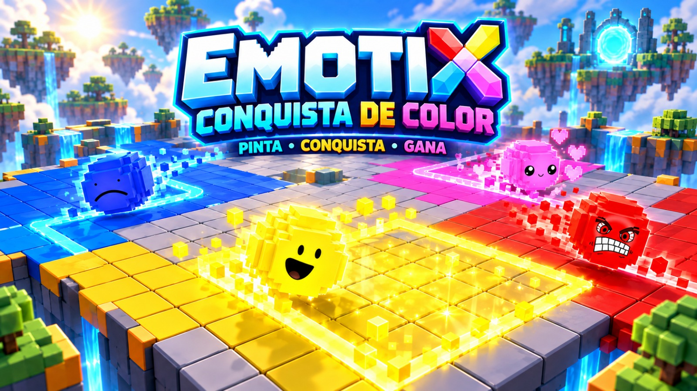

01 / ROBLOX · EN DESARROLLO
EmotiX: Conquista de Color
Estoy iniciando un nuevo proyecto en Roblox. EmotiX parte de una idea: pintar, conquistar y ganar en un mundo lleno de color. Este es el primer vistazo a su identidad visual.
Mi perfil de RobloxPrimeros pasos · Todavía no disponible para jugar.